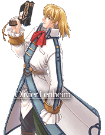
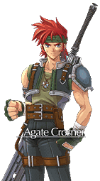
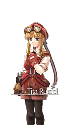

"The Debaucherous Hunter of Love"
An eccentric, wandering bard from the Erebonian empire. He has a dramatic personality and a flair for the arts, never skipping an opportunity to be the spotlight of any situation. He loves fine wine almost as much as he loves playing the lute, and his passion for passion, in general, makes every adventure with him anything but ordinary. Despite his aloof personality, he actually boasts a hidden serious side, as well as an unusual level of marksmanship with orbal guns.

"The Heavy Blade"
The jerk with a golden heart, a senior rank bracer, and an ex-member of the Ruan region's infamous Raven Gang. His caring and selfless side is heavily cloaked by his crass and tough demeanor towards people, which usually isn't taken too well by people he meets due to his directness. Circumstances past has caused him to be the hardest on no one but himself. His trademark crimson hair and heavy claymore pays homage to one of his many given aliases, "The Ever Burning Flame".

"The Girl Skilled in Orbal Engineering"
An innocent and cheerful girl who works at the Zeiss region's Central Factory. Her faculty for technology exceeds that of even the most seasoned of sceintists thanks to her grandfather's mentorship. The cute and loving individual exudes a unique childlike wonder in front of the machines she fiddles with, eventually taking on a role as Estelle's hypothetical little sister. As she occasionally travels the city whenever work requires her to, she does so without much worry, probably thanks to the orbal cannon she always has strapped around her person.